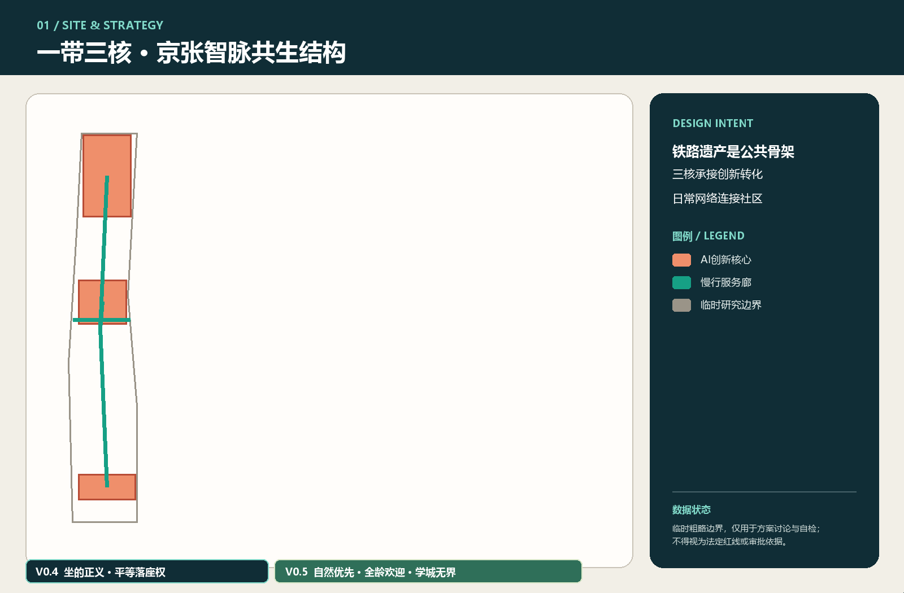
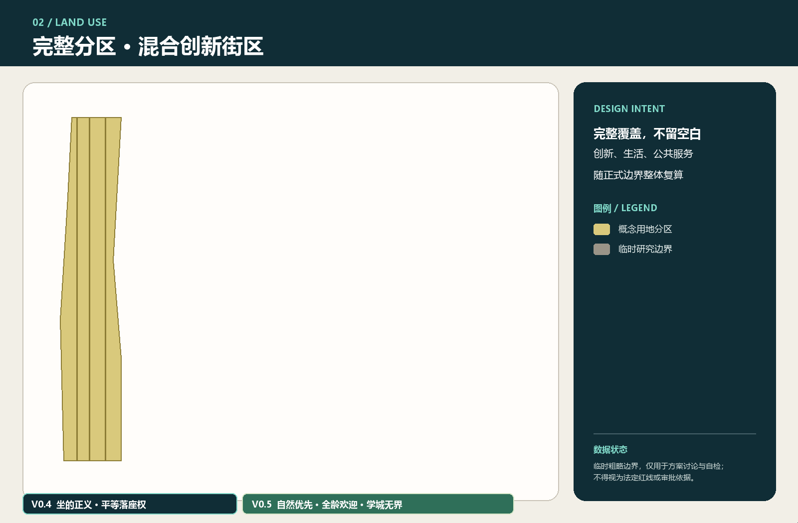
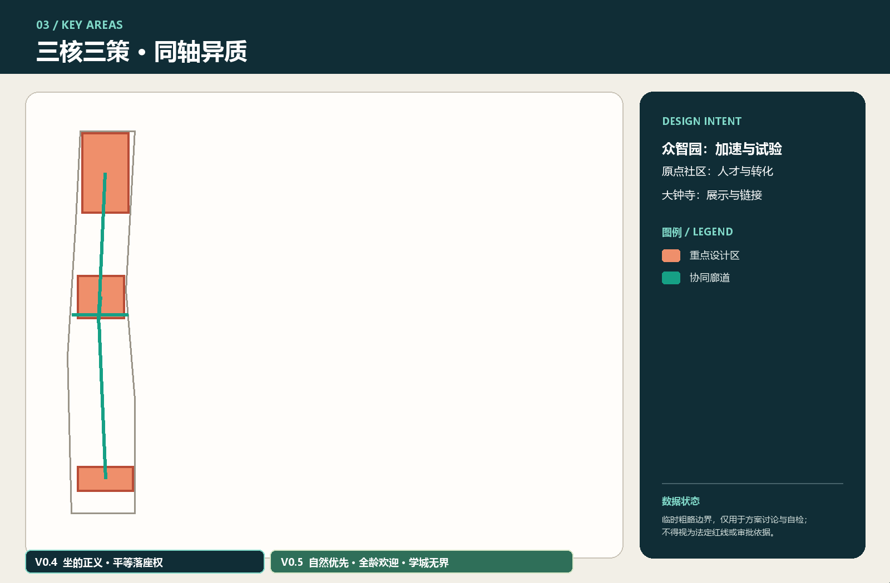
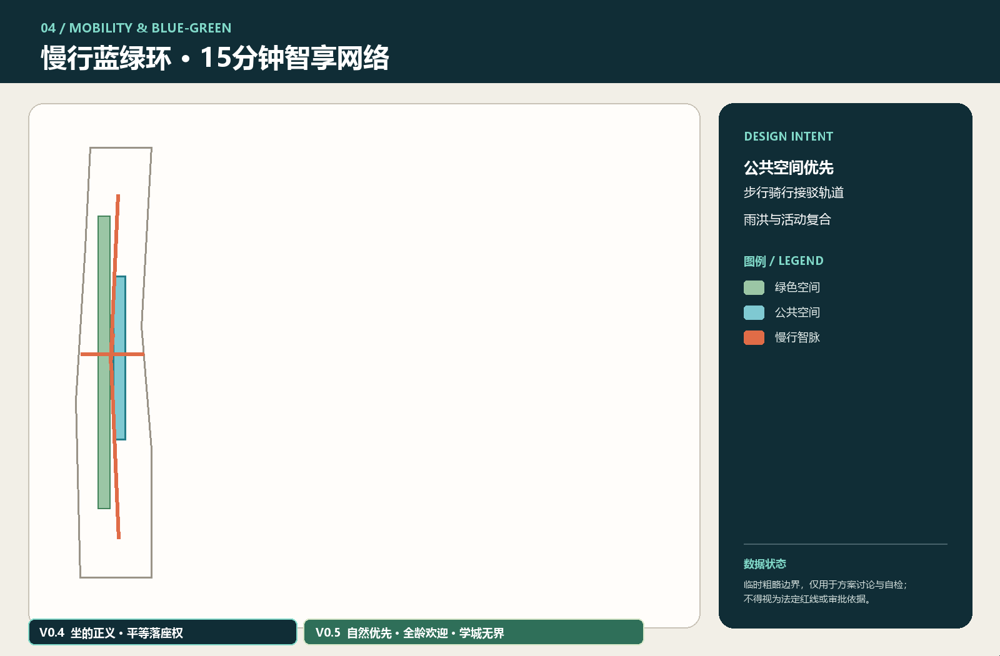
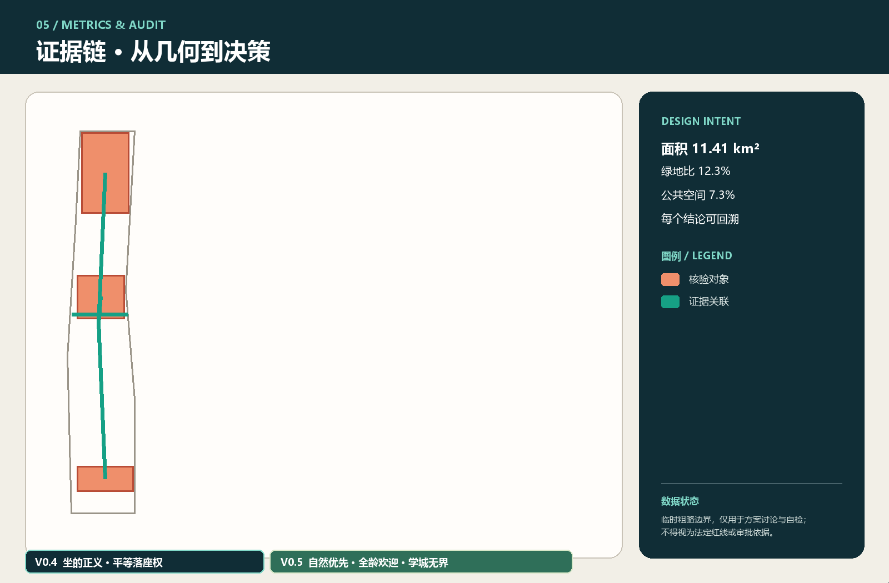

京张智脉·共生试验场：百年基础设施上的开放智能城市
基于 provisional boundary 和结构化自检要求生成的 formal AI 城市设计方案包；保留精度警示和复算要求，但组织方数据缺口不阻断内容评分。
京张智脉·共生试验场：百年基础设施上的开放智能城市
方案总纲：让AI成为可选择、可退出、可审计的城市公共能力
“京张智脉·共生试验场”不以建设一座封闭科技园为目标，而是将百年铁路基础设施转译为开放城市接口：遗产轴负责记忆与公共性，众智园、北京AI原点社区和大钟寺三核分别承担验证、转化与传播，慢行蓝绿环把创新资源还给日常生活。空间策略概括为“一带三核、两翼协同、十景成网”，并以三条约束校验：任何AI服务必须保留非数字替代路径；任何空间判断必须能回到几何和来源；任何运营承诺必须标明责任主体与退出机制。[source:AGENT-TASKBOOK] [standard:PROJECT-AGENT-OPEN-CALL-TASKBOOK] [depth:overall_spatial_structure]
原创设计动作包括：三条从公共核心连接三处重点区的“智脉廊道”，形成步行、骑行、低速接驳与公共服务叠合的概念网络；“算法橱窗”公开城市智能体的用途、数据、责任与申诉入口；“百年—百问”遗产叙事把铁路工程史与AI伦理问题并置。新增廊道已记录于 [data:geometry/roads.geojson#ROAD-JZ-02-1]，所有面积敏感结论仍服从临时边界限制。[metric:site_area_sqm]
设计优先级依次为：先缝合断点和开放首层，再布置可逆的轻量试验设施，最后才讨论依赖法定条件的建设量。这样可让短期运营验证为专业团队的控规、交通、市政和建筑深化提供反馈，而不预设拆建结论。
设计依据与资料清单
本轮 v0.2 进一步把“共生”定义为三组可核验关系：遗产与创新共享公共轴、专业规划与居民经验共享决策证据、智能服务与非数字服务共享同一空间入口。评审可据新增廊道要素和五张同源图核对这三组关系，而无需依赖效果图想象。[data:geometry/roads.geojson#ROAD-JZ-02-1] [depth:overall_spatial_structure]
本 formal 方案以北京市规划和自然资源委员会海淀分局发布的《百年京张AI创新带城市设计国际方案征集资格预审公告》为第一依据，并以 brief/site-package/ 中经维护者登记的临时粗略边界、重点区域、枚举、指标和来源清单为机器可读依据。AI agent 在生成方案前必须读取 design_brief.json、allowed_design_space.json、sources.json、enums/、ranges/、schemas/、data/source_registry.json 和 data/processed/agent_fact_pack.md，并用 project_scope_summary.csv、agent_task_requirements.csv、source_use_matrix.csv、missing_data_checklist.csv 建立任务、范围、资料用途和缺口清单。所有设计判断都要拆分为可追溯来源、可复算指标、可校验图层和可人工复核假设。公告要求方案达到控制性详细规划的城市设计深度和规划综合实施方案的城市设计深度，因此文本叙述不能替代 GeoJSON、指标表、A3 文册、A0 展板和 HTML 电子展示成果。
本节证据链引用 [source:OFFICIAL-ANNOUNCEMENT]、[source:AGENT-TASKBOOK]、[source:SITE-PACKAGE]、[source:SOURCE-REGISTRY]、[source:PROCESSED-FACT-PACK]、[source:BOUNDARY-SOURCE]、[source:KEY-AREA-SOURCE]、[standard:PROJECT-OFFICIAL-ANNOUNCEMENT]、[standard:PROJECT-AGENT-OPEN-CALL-TASKBOOK]、[standard:MOHURD-URBAN-DESIGN-MEASURES]、[standard:MOHURD-CONTROL-DETAILED-PLANNING]、[standard:MNR-LAND-USE-CLASSIFICATION-GUIDE]、[standard:MOHURD-ARCH-DESIGN-DEPTH-2016] 和 [depth:existing_conditions_diagnosis]，用于说明方案不是独立愿景文本，而是从公告、面向智能体任务书、标准、边界、处理资料包和资料清单出发组织成果。
资料登记表的使用边界如下：
- data/source_registry.json 登记公开、清权与临时资料的用途边界。
- 当前登记摘要：formal 可用资料 5 条，背景资料 0 条，provisional-only 资料 1 条。
- agent 不得把 background_only 或 provisional_only 资料升级为 official boundary、法定控规、正式评分依据或政府实施承诺。
data/processed/agent_fact_pack.md 是本方案的阅读导航层，不是新的权威来源。[source:PROCESSED-FACT-PACK] 只帮助 agent 把三层范围、三处重点区、公告任务、agent.1-agent.6、资料可用性和缺资料事项组织成可读方案；所有事实判断仍回到 [source:OFFICIAL-ANNOUNCEMENT]、[source:AGENT-TASKBOOK]、[source:SOURCE-REGISTRY]、[source:BOUNDARY-SOURCE] 与 [source:KEY-AREA-SOURCE]。

本脚手架在官方 SITE_BOUNDARY 或三处 KEY_AREA 尚未取得时，使用 brief/site-package/geometry/provisional_boundaries.geojson 生成临时 formal 包。提交包中的 geometry/site_boundary.geojson 与 geometry/key_areas.geojson 均必须标注为 provisional_constraint、official_boundary=false，只能用于方案生成、自检、可视化和设计讨论，不能作为 official redline、审批依据、精确面积依据或法定控制结论。该组织方数据缺口本身不阻断内容评分；替换 official polygons 后，site boundary、key areas、land use、roads、green space、public space、buildings、phasing 和 metrics 均需重算。
本次脚手架生成的可评分状态为：**临时边界，保留精度警示并待正式数据发布后复算；不阻断内容评分**。因此，正文中的空间结构、场景、项目和指标均按“可讨论、可复核、可替换官方边界后重算”的原则写入；当官方边界和重点区 polygon 更新后，agent 必须重新运行脚手架、自检和图纸/HTML生成，不能只替换单个文件。
边界和重点区域的可读解释对应 [data:geometry/site_boundary.geojson#SITE-001]、[data:geometry/key_areas.geojson#PROV-KEY-001] 和 [metric:site_area_sqm]、[metric:key_area_count]。这意味着读者可以从正文回到 GeoJSON 查看边界来源、从 metrics 查看面积复算结果、从 sources 查看资料来源，而不是只相信一段文字判断。
三层范围工作框架
方案按照公告确定的三个层次组织工作：统筹研究范围关注 43.6 平方公里的AI产业生态、战略定位、创新链和未来城市形态；总体设计范围关注 11.4 平方公里京张遗址公园周边 1-2 公里城市地区和产业区，要求形成城市更新总体框架、产业空间布局、交通市政支撑和城市风貌控制；重点区域范围关注 368.4 公顷三处详细设计地区，要求明确功能业态、建筑规模、拆改留分类、公共空间连通和交通组织。三层范围在 compliance_matrix.json 中逐条映射，保证公告 1.3、1.4、1.5 与 agent.1-agent.6 的必选任务都有章节、图层、指标、图纸和 HTML 证据。
三层工作框架的深度项由 [depth:three_level_scope_framework] 和 [depth:overall_spatial_structure] 约束，空间证据以 [data:geometry/site_boundary.geojson#SITE-001] 与 [data:geometry/key_areas.geojson#PROV-KEY-001] 为准，任务依据以 [standard:PROJECT-OFFICIAL-ANNOUNCEMENT] 为准，范围索引以 [source:PROCESSED-FACT-PACK] 中 project_scope_summary.csv 的三层范围表为导航。

三层工作不是互相割裂的图纸集合。统筹研究决定产业链和城市形态判断，总体设计把判断落实到更新项目、空间结构和设施承载，重点区域详细设计验证具体地块、建筑、交通、公共空间和AI应用场景的可实施性。agent 生成方案时必须先锁定当前提交采用的 official 或 provisional 边界和约束，再生成用地、建筑、道路、绿地、公共空间、分期和AI服务节点，最后从这些图层复算指标并在正文解释哪些结论仍受 provisional boundary 限制。任何无法从结构化数据复算的面积、比例、规模或项目数量，不得写入正式结论。
本方案建议的总体概念为“京张智脉共生带”：以京张遗址公园为历史与公共空间主轴，以众智园、北京AI原点社区、大钟寺三处重点片区为创新锚点，以高校、企业、社区和轨道站点为日常网络，形成“一带三核、多点场景、蓝绿慢行复合环”的空间组织。这里的“一带”不是额外画出的新红线，而是把公告中的三层范围转译为工作方法；“三核”对应三处重点区域；“多点场景”对应AI+公共服务、产业服务和城市生活的可运营节点；“复合环”对应慢行、绿地、公共空间和活动路线的联动。
| 层级 | 设计问题 | 方案回答 | 数据落点 | | --- | --- | --- | --- | | 统筹研究范围 | AI产业生态和未来城市形态如何组织 | 建立“高校策源-开源协作-企业转化-公共体验-国际传播”的创新链 | compliance_matrix.json、standard_matrix.json | | 总体设计范围 | 产业空间、城市更新、交通市政和风貌如何落图 | 用地、建筑、道路、绿地、公共空间和分期图层共同表达 | [data:geometry/land_use.geojson#LU-001]、[data:geometry/roads.geojson#ROAD-001] | | 重点区域范围 | 三处片区如何达到详细设计深度 | 分别提出定位、空间动作、AI场景和实施依赖 | [data:geometry/key_areas.geojson#PROV-KEY-001]、[data:geometry/key_areas.geojson#PROV-KEY-002]、[data:geometry/key_areas.geojson#PROV-KEY-003] |
统筹研究范围产业与未来城市研究
统筹研究范围的核心任务是构建世界级 AI 创新生态体系。方案应梳理海淀高校院所、头部企业、算力算法数据要素、孵化平台、上市企业、独角兽和科技服务资源，提出AI创新链、产业链、人才链和城市服务链的空间协同框架。命名方案和 logo 设计应服务于“百年京张文化带、都市AI生活体验带、AI融合创新带”的整体辨识度，不能只停留在口号，应说明与产业生态、公共空间和文化资源的关联。面向智能体任务书还要求回应“五大功能”和“三区两翼”协同，形成可继续深化的命名系统、视觉识别、总体空间结构图、场景开放和运营机制；本节必须用 [source:AGENT-TASKBOOK] 与 [standard:PROJECT-AGENT-OPEN-CALL-TASKBOOK] 标注这些要求来自 agent 开源征集任务，而不是法定规划控制。
统筹研究并不新增伪精确红线；它通过 [standard:MOHURD-URBAN-DESIGN-MEASURES] 要求的城市风貌、公共空间和建筑布局统筹，回接 [data:geometry/land_use.geojson#LU-001]、[data:geometry/public_space.geojson#PUBLIC-001] 与 [depth:overall_spatial_structure]，说明产业策略最终要落到可见、可复核的空间结构。
未来城市形态研究应回答人工智能如何改变工作、生活、社交、学习、交通和公共服务。方案应把AI交通系统、连续绿色空间、创新服务设施和国际化生活工作氛围落实为可定位的功能区、节点、廊道和场景，而不是泛泛描述技术愿景。agent 应把产业战略指标、AI创新指数、人才密度、空间供给类型和AI+垂直应用重点区域写入指标体系，并标明哪些是官方、哪些是设计建议、哪些仍待正式数据校准。若提出全球AI创新活动、开发者社区、开放场景或朝圣路线，应写为“概念建议/参考方案/可供专业团队深化研究”，不得写成已经确定的政府活动或实施安排。
总体设计范围城市更新与控规深度城市设计
总体设计范围要求达到控制性详细规划的城市设计深度。方案必须提出城市更新总体空间结构、低效空间识别、更新项目清单、实施政策建议、产业功能比例、空间组织模式、建筑总规模和综合承载能力评估。geometry/land_use.geojson 应完整覆盖设计边界且无重叠，geometry/buildings.geojson 应表达更新建筑基底或保留建筑基底，geometry/roads.geojson 应表达微循环、慢行和轨道接驳关系，metrics.json 应复算核心面积、比例和图层数量。
本节按照 [standard:MOHURD-CONTROL-DETAILED-PLANNING] 把控规深度内容拆成可审查对象：[data:geometry/land_use.geojson#LU-001] 表达用地结构，[data:geometry/buildings.geojson#BLDG-001] 表达建筑基底，[data:geometry/roads.geojson#ROAD-001] 表达交通组织，[metric:building_footprint_area_sqm] 用于复核建筑基底面积，[depth:land_use_layout] 与 [depth:development_intensity_controls] 约束成果深度。
总体设计还必须支撑交通、轨道、市政和配套设施。方案应围绕轨道站点一体化、道路微循环、非机动车停放、停车供给、创新服务平台、人才生活服务、新型基础设施、分布式能源和端侧算力提出空间布局和实施路径。涉及建筑高度、开发强度、道路红线、退线和设施标准的内容，若尚无官方控制条件，应写为“待正式控规条件确认”，不得以 agent 推测值冒充审定指标。
重点区域详细设计
重点区域详细设计是必选项。众智园AI自主创新加速区应围绕国家人工智能平台、全栈自主创新、标准制定、安全治理、产业展示、对外交通、清河文化、低碳绿色创新交往环境和绿色空间AI场景提出详细方案。北京AI原点社区应围绕近校创新、成果孵化转化、人才特区、开源体系、品牌活动、建筑拆改留、成果展示发布、居住生活配套、校区园区慢行联系和轨道站点一体化提出详细方案。大钟寺AI产业聚集区应围绕领军企业、智能体、智能终端、内容消费、数据要素、数字资产、商业服务、规划绿地复合利用、大钟寺站一体化和路口四象限步行连通提出详细方案。
三处重点区域详细设计必须引用 [data:geometry/key_areas.geojson#PROV-KEY-001]、[data:geometry/key_areas.geojson#PROV-KEY-002]、[data:geometry/key_areas.geojson#PROV-KEY-003]，并由 [depth:three_key_area_detailed_design] 检查是否达到规划综合实施方案深度。若只描述“打造示范区”而没有功能、建筑、交通、公共空间和实施项目证据，应被视为未完成。

三处重点区域必须在 geometry/key_areas.geojson 中出现。若仓库已提供 official polygons，应作为 official_constraint 使用；若 official polygons 缺失，可暂用 provisional_constraint，但正文、HTML、sources、assumptions 和 self_check 必须说明它不能作为正式评分或审批依据。compliance_matrix.json 应分别覆盖公告 1.5.3.1、1.5.3.2、1.5.3.3。设计表达应包含功能业态、建筑规模、建筑形态、拆改留分类、公共空间系统、交通组织、慢行连通和实施项目。HTML 页面应能切换查看三处重点区域，A3 文册和 A0 展板应至少包含重点片区总图、局部详图和指标说明。
| 重点片区 | 设计定位 | 空间动作 | AI产业与运营场景 | 证据引用 | | --- | --- | --- | --- | --- | | 众智园AI自主创新加速区 | 花园型全栈自主创新街区 | 强化清河界面、产业展示、低碳创新交往和对外交通组织；以绿色空间承载开放测试与标准治理展示 | 自主模型测试、标准制定工作坊、安全治理展示、低碳算力体验 | [data:geometry/key_areas.geojson#PROV-KEY-001]、[depth:three_key_area_detailed_design] | | 北京AI原点社区 | 近校型成果转化与人才社区 | 组织校区、园区、街区慢行缝合；补足成果发布、人才服务、居住生活和开源协作空间 | 开源社区、成果发布、人才特区服务、近校孵化 | [data:geometry/key_areas.geojson#PROV-KEY-002]、[source:AGENT-TASKBOOK] | | 大钟寺AI产业聚集区 | 城市型智能经济与国际交往街区 | 围绕大钟寺站一体化、四象限步行连通、商业服务和重点企业公共环境更新 | 智能体与智能终端展示、内容消费、数据要素与国际路演 | [data:geometry/key_areas.geojson#PROV-KEY-003]、[metric:key_area_count] |
AI 创新生态、人才画像与 AI+ 场景
方案应建立面向AI人才和企业的空间需求画像，覆盖研发办公、开源协作、成果发布、企业服务、人才居住、社交学习、消费生活、运动休闲和国际交往。AI+场景应围绕公告提出的交通、服务、消费、医疗、教育、法律、生活服务等方向，形成产业发展场景和AI赋能城市功能场景。每个场景应说明服务对象、空间位置、数据来源、隐私边界、人工复核机制和运营主体。
AI 场景必须落到空间和治理边界：公共空间场景引用 [data:geometry/public_space.geojson#PUBLIC-001]，慢行与交通场景引用 [data:geometry/roads.geojson#ROAD-001]，开放空间场景引用 [data:geometry/green_space.geojson#GREEN-001] 和 [metric:public_space_ratio]、[metric:green_ratio]。这些引用让评审者知道场景不是口号，而是位于具体图层和指标中的设计对象。面向智能体任务书要求不少于10张AI场景卡、不少于3个产业测试验证场景和不少于5类用户画像；脚手架只给出结构，正式参赛者必须把场景卡、画像表、隐私边界、人工复核和运营主体写入正文、HTML、A3/A0 和合规矩阵。
| 用户画像 | 典型需求 | 空间响应 | 自检边界 | | --- | --- | --- | --- | | 开源开发者 | 发布、协作、测试、社区声誉 | 原点社区开源发布厅、公共代码墙、夜间协作空间 | 不采集个人行为轨迹；活动数据只做聚合统计 | | 初创团队 | 低成本办公、算力入口、产品试验场 | 众智园共享测试场、端侧算力服务点、标准治理咨询 | 算力和数据服务需另行授权 | | 头部企业访客 | 展示、商务、国际接待、人才招聘 | 大钟寺国际路演客厅、轨道站点接驳、重点企业周边公共空间 | 企业标识和案例须清权 | | 周边居民 | 通勤、休闲、社区服务、低扰动更新 | 京张遗址公园慢行环、社区服务嵌入、夜间照明和活动分级 | 不将居民画像用于商业推荐 | | 高校师生 | 成果转化、跨校协作、日常慢行 | 校区-园区慢行缝合、成果转化驿站、AI教育体验点 | 校园数据和科研成果需授权 |
| 场景卡 | 空间载体 | 设计说明 | | --- | --- | --- | | 01 开源发布厅 | 北京AI原点社区 | 面向高校、开源社区和初创团队，提供成果发布、代码贡献展示和小型路演空间 | | 02 安全治理沙盒 | 众智园 | 将标准制定、安全评测、模型红队测试转译为可参观、可预约、可监管的展示和协作节点 | | 03 端侧算力驿站 | 总体设计范围节点 | 与公共服务、企业服务和低碳能源策略结合，作为待深化的新型基础设施原型 | | 04 AI慢行导航 | 京张遗址公园活力带 | 用可解释导视和低侵入传感帮助识别慢行断点、拥挤节点和无障碍需求 | | 05 大钟寺国际路演客厅 | 大钟寺AI产业聚集区 | 服务智能体、智能终端和内容消费企业的展示、洽谈、媒体发布和国际交流 | | 06 清河低碳创新廊 | 众智园临清河界面 | 把绿色空间、雨洪、步行骑行和AI展示结合，作为园区公共客厅 | | 07 近校成果转化街 | 北京AI原点社区 | 面向高校成果转化，组织孵化、展示、法务、知识产权和投融资服务 | | 08 数据要素会客厅 | 大钟寺片区 | 以合规、授权、可审计为前提，展示数据要素和数字资产流通的城市服务界面 | | 09 AI生活服务样板街 | 社区与商业交汇处 | 将医疗、教育、法律、生活服务等AI+场景落到可运营的小尺度街区空间 | | 10 全球AI活动周路线 | 一带公共空间系统 | 形成从遗址文化、开源社区、产业展示到国际路演的可步行、可传播体验路线 |
agent 生成的AI治理建议必须遵守数据最小化、公开来源、可解释和人工复核原则。城市智能体可以辅助识别慢行断点、公共空间热力、设施维护、企业服务需求和活动安全风险，但不能替代规划审批、不能输出未经授权的个人画像、不能声称获得官方实施承诺。所有AI场景节点应进入结构化图层或合规矩阵，便于评审者看到它们与产业、空间和公共利益之间的关系。
自然化、全龄与学城无界：把AI藏进服务，把人还给城市
先进的 AI 创新带不应只服务开发者、企业和设备，也不应以具有科技消费能力的人为默认用户。它首先应是一段欢迎所有人到来的城市：儿童、青年、老人、残障人士、低数字能力者、夜班和服务劳动者、周边居民、学生、研究者、创业者及访客，都能进入、休息、交流并获得非数字等效服务。“先进”不以机械设施的可见密度衡量，而以自然环境是否舒适、公共空间是否包容、人与人是否更愿意走到一起衡量。[source:AGENT-TASKBOOK] [standard:PROJECT-AGENT-OPEN-CALL-TASKBOOK] [depth:public_service_facilities]
1. 全人群欢迎带：没有默认用户，也没有剩余人群
方案把“一带”重新定义为全人群欢迎带。入口、路径、座位、饮水、卫生间、照明、休息、求助、信息和活动不能只依赖手机、会员、门禁或消费。空间设计与“平等落座权”共同接受七类检查：身体可达、经济可达、语言可达、数字可达、时间可达、心理安全和退出自由。弱势使用者不是设计完成后的补充测试者，而应进入共创、试用、复盘和停止机制。[data:geometry/public_space.geojson#PUBLIC-001] [depth:risk_missing_data]
2. 从楼里走向树下：自然是AI时代的第一界面
创新建筑不能把人永久封闭在屏幕、空调和会议室中。首层与公共空间应通过可开启界面、连续遮荫、雨棚、树阵、可坐台阶、口袋花园和亲水但安全的气候调节空间，吸引工作者在午间、讨论、休息和展示时走到户外。AI退居后台，用于自愿查询的微气候信息、灌溉维护、雨洪预警和无障碍路线辅助；地面视觉不采用夸张的机械皮肤、机器人造型或“未来感”装饰。[data:geometry/green_space.geojson#GREEN-001] [metric:green_ratio] [depth:blue_green_public_space]
遮荫、水资源与气候调控作为公共健康基础设施协同：优先保留和补充适地树冠，利用可渗透地面、下凹绿地、雨水花园和可维护的调蓄单元降低热暴露并管理雨水；具体树种、冠幅、调蓄量、水质、地形和防洪结论必须等待现场生态、水务和市政资料，不以效果图代替专业计算。
3. 慢生活地表与隐形基础设施
绿地和公共空间减少暴露的机械设施、设备箱、护栏、人造装饰和无意义标识牌。必要设施应合并、隐蔽、贴近维护路径，并通过少而清晰的导视和无障碍触觉信息服务使用者；不得为了“科技感”增加视觉噪声。地面交通优先步行、骑行、无障碍移动和公共交通接驳，保留观察、闲坐、散步、玩耍和偶遇的低效率时间。[data:geometry/roads.geojson#ROAD-001]
为减少地面配送车辆与设备暴露，可研究利用既有地下空间或条件允许的新建地下界面组织**低速、分区、可人工接管的无人运输系统**。该设想不代表已确认建设地下道路；必须先完成地质、权属、管线、消防、防洪、疏散、能耗、成本、噪声、维护和故障回退论证。危险品、人员混行和无法人工接管的运行方式不进入试点。[depth:municipal_new_infrastructure]
4. 代际伙伴计划：青年不是讲师，老人不是被改造对象
青年与老年人的交流以互惠而非单向“科技扫盲”为原则。青年可协助老人理解AI服务、保护个人信息、识别诈骗并选择非数字路径；老人则分享职业经验、地方记忆、照护知识和生活判断。双方在无门槛长桌、修理咖啡桌、社区厨房、遗产讲述和公共议事中共同完成真实任务。青年之间也通过开放工作坊、志愿服务和公开复盘，示范守信、耐心、照顾弱者和对技术后果负责的公共行为，而不是追求表演性的“做好人”。
建议的评估不是课程次数，而是老人是否能自主选择服务、是否减少求助焦虑、青年是否理解责任边界、双方是否形成持续联系，以及低数字能力者是否仍能使用同等公共服务。任何陪伴活动不得采集不必要的身份、健康或家庭信息。
5. 足下智轨：可踩、可触、可共同完成的AI朝圣地标
AI朝圣地标不采用高高矗立、只能仰望的纪念碑，而采用嵌入地面的“足下智轨”。它沿京张铁路发展叙事设置三类可踩踏、可触摸、轮椅可通过的地面节点，供专业团队深化：
| 地面节点 | 铁路—AI叙事 | 人的互动 | | --- | --- | --- | | 动力之轨 | 从蒸汽、机械传动到电气化 | 踩踏或推动安全构件，理解能量如何转化；设置静态等效体验 | | 信号之轨 | 从铁路信号、时刻协同到网络计算 | 多人站在不同点位才能完成协同灯带或声音反馈，不采集身份 | | 共创之轨 | 从自动控制到可解释、可退出的城市AI | 参与者共同选择议题、查看规则与申诉入口，结果由现场讨论完成 |
地标的价值在“共同踩上去”，而非制造新的权力高度。所有构件必须防滑、无绊倒边缘、避免眩光和噪声扰民，保留无需传感器的静态阅读方式；涉及文保、结构、消防和夜景的内容须取得专业确认。[depth:height_massing_character]
6. 学城无界环：让校园学习进入社会，让社会经验进入校园
研究范围内及周边学校不应成为彼此孤立的知识岛。方案提出“学城无界环”概念网络，通过公共开放时段、共享课程、社会议题工作坊、跨校步行骑行联系、成果展示、社区服务和联合维护，把校园生活与社会生活连接起来。所谓“打破校园壁垒”不是取消安全边界或无条件开放校园，而是把围墙、门禁和管理规则从永久隔绝转化为分时、分区、可预约、可监管且保留非数字入口的合作界面。
在正式校界、学校清单、安全规则、未成年人保护和开放资源资料到位前，本方案不绘制具体穿越校园的线路，也不承诺开放范围。建议优先从校外公共空间的联合课程、社区导师、跨校修理咖啡桌、铁路遗产研究、无障碍共测和“坐的正义”公共评议开始，再由学校、社区、学生、家长和管理者共同决定是否深化。[depth:three_level_scope_framework]
六项原则如何进入三核
| 重点区 | 概念策略 | 自然与人的主场 | AI的后台角色 | | --- | --- | --- | --- | | 众智园 | 开放试验与责任共创 | 树下评审、跨校工作坊、足下“共创之轨” | 公开模型卡、测试记录和申诉入口 | | AI原点社区 | 日常关怀与代际伙伴 | 无门槛长桌、并肩照护椅、校园—社区共享课程 | 自愿字幕、反诈辅助、非数字等效服务 | | 大钟寺 | 陌生人相遇与公共传播 | 遮荫会客、夜班友好座位、足下“信号之轨” | 多语言辅助与人工确认的公共纪要 |
三核的官方任务对象保持不变，但各自的设计策略由“展示AI设备”转向“用自然空间和包容关系检验AI是否真正服务人”。这些内容均为概念建议和供专业团队深化的参考方案，不构成校园开放、地下工程、建设项目或政府实施安排。
用地、建筑规模与拆改留方案
用地方案应依据国土空间调查、规划、用途管制分类等公开标准表达，形成完整、闭合、无缝的用地分区。建筑方案应区分保留、改造、更新、新建或待确认对象，明确建筑基底、功能、规模、风貌、屋顶、体量和高度控制的建议层级。若缺少现状建筑、权属、控规和工程条件，方案只能提出方法和待校准清单，不能编造拆改留结论。
用地分类依据 [standard:MNR-LAND-USE-CLASSIFICATION-GUIDE]，建筑高度、体量、界面和风貌控制由 [depth:height_massing_character] 管理，拆改留方法由 [depth:retain_renovate_demolish] 管理。用地和建筑的主要证据是 [data:geometry/land_use.geojson#LU-001]、[data:geometry/buildings.geojson#BLDG-001] 和 [metric:building_footprint_area_sqm]。
建筑规模和强度指标必须与 metrics.json 和图层一致。若总建筑规模、容积率、建筑高度、建筑密度、绿地率、退线和建筑控制线缺少官方条件，应在指标体系中列为 unknown 或 pending_control，不得用固定数值制造精确感。A3 文册应给出更新项目清单和指标复核表，A0 展板应把关键空间结构和重点片区表达清楚，HTML 页面应提供指标和图层联动查看。
交通、轨道、市政与公共服务设施
交通方案应回应公告对轨道站点一体化、道路微循环、慢行断点、对外交通、停车、非机动车停放和绿色交通系统的要求。重点应覆盖北五环、京张遗址公园跨环路节点、五道口、清华东路西口、大钟寺站及重点企业周边交通联系。道路和慢行图层应保持在提交边界内，并与公共空间、绿地、产业节点和重点片区相互校核；若提交边界为 provisional，交通结论也只能作为临时设计讨论。
交通和市政专业深度分别由 [depth:traffic_rail_slow_parking] 与 [depth:municipal_new_infrastructure] 约束；图层证据引用 [data:geometry/roads.geojson#ROAD-001]、[data:geometry/public_space.geojson#PUBLIC-001] 和 [data:geometry/constraints.geojson#CONSTRAINTS]。当道路红线、管线、消防和市政条件缺失时，应通过 assumptions 说明待补，而不是把策略写成审定条件。

市政和公共服务设施应覆盖AI产业服务设施、创新服务平台、人才生活服务设施、新型基础设施、分布式能源、端侧算力和传统市政设施融合。方案应说明设施标准、空间布局、服务半径、运营模式和分期实施逻辑。缺少管线、能源、排水、防洪、消防等工程资料时，应列为正式深化前置条件。
坐的正义：以平等落座权重建面对面城市
未来的 AI 不应成为人与人进一步隔阂的诅咒，而应成为交流的平台与地基。当重复性劳动更多交给机器，人类城市最稀缺的资源不再只是效率，而是愿意共同停留的时间、被倾听的机会以及给予安慰、鼓励、夸赞和掌声的空间。越是进入 AI 时代，面对面关系越不能被界面、推荐流和自动服务替代。为此，本方案将用户提出的“屁股正义”转译为正式设计概念——**平等落座权**：任何人的进入、停留、坐下、发言和被听见，不应由消费能力、职业身份、身体能力、年龄、户籍、设备拥有状况或算法评分决定。[source:AGENT-TASKBOOK] [standard:PROJECT-AGENT-OPEN-CALL-TASKBOOK] [depth:blue_green_public_space]
五项座位权利
1. **进入权**：座位网络连接轨道站、社区、园区、遗产公园和三处重点区，不以门禁、消费或注册作为公共座位的前置条件。 2. **停留权**：保留足量非商业、无遮蔽收费、无需扫码的座位；清洁和秩序规则不得转化为对无家者、夜班劳动者或低收入群体的敌意设计。 3. **共同坐下权**：每个交流单元同时考虑轮椅并坐位、扶手靠背、儿童与照护者位置、不同座高、可移动椅和安静边座，让不同身体条件的人处于同一谈话平面。 4. **发言与退出权**：围坐不等于强迫社交。空间同时提供开放圆桌、两人长椅、独处边座和可随时退出的路径；AI 不以情绪识别或人脸识别判断谁值得被邀请。 5. **被听见权**：AI 可提供自愿启用的实时字幕、跨语言翻译、听障辅助、话题卡和活动匹配，但不录制私密谈话、不建立社交信用，也不替代主持人、社工、朋友和邻里。
“一带三核六种坐法”空间原型
本方案在 [data:geometry/public_space.geojson#PUBLIC-001] 表达的公共活动界面中植入六类可供专业团队深化的座位原型，并与智脉慢行廊道 [data:geometry/roads.geojson#ROAD-JZ-02-1] 协同：
| 原型 | 主要对象 | 面对面关系 | AI 的克制角色 | | --- | --- | --- | --- | | 掌声圆环 | 开源贡献者、学生、居民 | 分享成果并获得现场回应 | 自愿字幕与贡献记录，不进行人气排名 | | 并肩照护椅 | 老人、儿童、照护者 | 陪伴、休息与低压力交谈 | 无障碍路线提示和人工求助入口 | | 无门槛长桌 | 园区员工、快递员、夜班劳动者、访客 | 跨职业共餐与短时交流 | 多语言菜单/话题提示，不要求消费 | | 安慰角 | 需要安静或情绪支持的人 | 一对一倾听或独处 | 仅显示自愿联系的公共服务，不做情绪推断 | | 修理咖啡桌 | 青年、退休工程师、社区居民 | 以共同动手降低陌生感 | 查询开放维修资料，成果归参与者 | | 城市议事阶 | 居民、规划师、管理者、企业 | 公开陈述、质询与鼓掌 | 议题归纳和可核对会议纪要，保留人工确认 |
这些原型不是新增法定设施或确定建设项目，而是一套“谁能坐下”的审查工具。任何公共空间深化方案都应回答：是否有不消费也能坐的位置；轮椅使用者能否与朋友并排而非停在通道；夜间劳动者是否有同等停留权；座椅是否通过扶手、分隔钉或倾斜面排斥某些人；发言机会是否被音量、语言或数字设备垄断。[depth:public_service_facilities] [depth:risk_missing_data]
可审计的概念目标
后续专业深化建议将“平等落座权”纳入现场观察与共同评估：记录免费座位的全天可用性、轮椅并坐单元、不同座高和靠背扶手组合、独处与群体座位比例、跨群体活动参与、无需数字设备即可获得的服务，以及因敌意设计或安保规则造成的退出事件。具体数量和比例须在官方边界、客流、无障碍、消防、运营和居民共创资料到位后确定；当前不制造伪精确指标。[metric:public_space_ratio]
评价不以“停留越久越好”或“互动越多越好”为目标，而以选择是否真实存在为标准：人可以加入，也可以沉默；可以围坐，也可以独处；可以使用翻译工具，也可以完全离线。AI 的成功不是替人说话，而是让更多人有资格坐下来，用自己的声音说话。
蓝绿空间、公共空间与城市风貌
蓝绿空间方案应以京张遗址公园活力带为骨架，统筹清河、小月河、周边高校、企业、社区出行需求，提出南北贯通、东西连通的步道、骑行道和绿色空间体系。方案应识别慢行断点、上跨环路节点、公园南端和北端景观节点，提出停车、体育、创新交往、科技测试、应用展示和公共服务复合利用策略。
蓝绿公共空间由 [depth:blue_green_public_space] 校核，核心证据为 [data:geometry/green_space.geojson#GREEN-001]、[data:geometry/public_space.geojson#PUBLIC-001]、[metric:green_ratio] 和 [metric:public_space_ratio]。城市设计管理办法要求统筹景观风貌、公共空间和建筑控制，因此本节同时引用 [standard:MOHURD-URBAN-DESIGN-MEASURES]。
城市风貌方案应融合京张铁路历史文化、中关村创新文化和AI创新文化，利用清华园火车站、北影等文化资源，提出城市基调、建筑风貌、屋顶形态、体量、界面和公共艺术引导。agent 还应提出导视标识、文化符号、国际传播叙事、AI朝圣地标、贡献墙或荣誉展示体系，但所有品牌、字体、图像、肖像和企业标识都必须有清权来源。风貌控制应分清官方管控、设计建议和待确认条件，严禁在没有文保或控规依据时给出伪精确控制线。
更新项目清单、实施政策与分期计划
实施方案应形成可审查的更新项目清单，说明项目位置、类型、功能、责任主体、依赖条件、实施阶段、风险和评估指标。政策建议应覆盖城市更新统筹实施、空间供给、运营机制、产业服务、公共参与、数据治理和产权协同。geometry/phasing.geojson 应表达分期范围，compliance_matrix.json 应把每个任务与分期和图纸挂接。
项目清单和分期深度由 [depth:renewal_project_list] 与 [depth:phasing_implementation] 管理，分期空间证据为 [data:geometry/phasing.geojson#PHASE-001]。如果没有权属、资金、实施主体和审批路径，方案必须把它写成实施风险，而不是承诺落地。
| 项目编号 | 项目名称 | 类型 | 主要依赖 | 证据引用 | | --- | --- | --- | --- | --- | | JZ-01 | 京张遗址公园慢行断点缝合 | 公共空间/交通 | 道路红线、桥下空间、交通组织复核 | [data:geometry/roads.geojson#ROAD-001] | | JZ-02 | 众智园清河创新界面 | 蓝绿空间/产业展示 | 河道蓝线、生态和防洪条件 | [data:geometry/green_space.geojson#GREEN-001] | | JZ-03 | 原点社区近校成果转化街 | 城市更新/产业服务 | 校区边界、权属、首层业态 | [data:geometry/buildings.geojson#BLDG-001] | | JZ-04 | 大钟寺站四象限步行连通 | 轨道一体化/慢行 | 轨道站点、道路交叉口、市政管线 | [data:geometry/public_space.geojson#PUBLIC-001] | | JZ-05 | AI公共服务与端侧算力节点 | 新基建/公共服务 | 能源、算力、安全和运营主体 | [data:geometry/constraints.geojson#CONSTRAINTS] | | JZ-06 | 全球AI活动周公共路线 | 运营/品牌 | 公共空间许可、活动安全、版权清权 | [data:geometry/phasing.geojson#PHASE-001] |
分期应与 100 天征集设计周期形成区分：征集周期是提交成果的时间要求，实施分期是城市更新和项目建设的推进路径。方案应提出近期试点、中期更新和长期治理框架，并标明哪些内容可先以轻量设施、运营活动和服务平台启动，哪些必须等待正式控规、市政、交通和权属条件确认。对于年度活动体系、开发者社区运营、场景开放日、公共体验路线和国际传播机制，正文应说明运营对象、频率、责任边界、转化路径和风险，不得只写宣传口号。
指标体系、面积复算与合规矩阵
指标体系至少应包含总体设计范围面积、重点区域面积、绿地与公共空间比例、建筑基底、更新项目数量、AI场景节点、慢行连通指标、产业空间指标、人才服务指标和自检状态。所有 known 指标必须能从 GeoJSON 或可信来源复算；unknown 指标必须给出原因和正式提交前置条件。scripts/spatial_review.py 和 scripts/visual_review.py 的结果是 formal 自检的重要证据。
指标复算深度由 [depth:metrics_recalculation] 管理。本方案正文显式引用 [metric:site_area_sqm]、[metric:key_area_count]、[metric:building_footprint_area_sqm]、[metric:green_ratio]、[metric:public_space_ratio]，并说明这些值来自 [data:geometry/site_boundary.geojson#SITE-001]、[data:geometry/key_areas.geojson#PROV-KEY-001]、[data:geometry/buildings.geojson#BLDG-001]、[data:geometry/green_space.geojson#GREEN-001] 和 [data:geometry/public_space.geojson#PUBLIC-001]。

合规矩阵是任务响应性的主控文件。每条公告任务和 agent_taskbook 任务必须对应到报告章节、图层、指标、图纸、HTML 页面、来源、假设和自检项。未能覆盖公告 1.3、1.4、1.5 或 agent.1-agent.6 的任一必选任务，方案不得进入 formal professional scoring。
正式深化时，agent 还应把每个指标分为三类：第一类是可由提交几何直接复算的空间指标，例如边界面积、绿地比例、公共空间比例、建筑基底面积和分期面积；第二类是需要官方控规或任务书附件支撑的管控指标，例如容积率、建筑高度、建筑密度、退线、道路红线和设施标准；第三类是需要运营或产业数据持续校准的绩效指标，例如 AI 创新指数、人才密度、产业服务满意度、慢行可达性、活动参与度和场景使用频次。三类指标应分别进入 metrics.json、assumptions.json 和 compliance_matrix.json，避免把运营愿景误写成审定规划条件。
风险、版权与合规说明
方案主文件可使用中文或英文，并应通过 proposal.en.md 或 proposal.zh.md 提供完整对照译文；缺少译文只产生 non-blocking warning，不阻断投稿、合并或内容审稿。A3/A0、HTML 和含文字图件也应提供对应语言副本，并优先使用 docs/terminology-glossary.md 的赛事推荐译法。所有图片、图纸、图标、数据和代码资产必须在 sources.json 或 report/copyright_statement.md 中说明来源、许可和授权状态。HTML 页面不得加载远程脚本、远程地图瓦片、远程字体、iframe、表单或外部 API，不得跟踪评审者行为。
风险和缺资料清单由 [depth:risk_missing_data] 管理，并与 [data:geometry/constraints.geojson#CONSTRAINTS]、[source:SITE-PACKAGE]、[source:PROCESSED-FACT-PACK] 和 [standard:MOHURD-CONTROL-DETAILED-PLANNING] 相互校核。missing_data_checklist.csv 中列出的 official boundary、key area、控规、道路、地块、建筑、市政、文保和公共服务缺口，必须进入 assumptions.json、自检和正文风险章节。任何缺少官方控规、道路红线、权属、市政、消防或文保条件的结论，都必须降级为待确认事项。
本方案不声称官方批准、审定控规、最终土地权属、最终建设规模或保证实施。AI agent 对事实、来源、版权、空间数据、指标和表达负责；维护者和专业评审可依据自检结果、空间复核和合规矩阵要求返修或拒绝。
参考资料
- brief/public-brief.md
- brief/site-package/design_brief.json
- brief/site-package/allowed_design_space.json
- brief/site-package/enums/
- brief/site-package/ranges/planning_limits.json
- data/processed/agent_fact_pack.md
- data/processed/project_scope_summary.csv
- data/processed/agent_task_requirements.csv
- data/processed/source_use_matrix.csv
- data/processed/missing_data_checklist.csv
- 机器可读引用索引：[source:OFFICIAL-ANNOUNCEMENT]、[source:AGENT-TASKBOOK]、[source:SITE-PACKAGE]、[source:SOURCE-REGISTRY]、[source:PROCESSED-FACT-PACK]、[standard:PROJECT-OFFICIAL-ANNOUNCEMENT]、[standard:PROJECT-AGENT-OPEN-CALL-TASKBOOK]、[depth:metrics_recalculation]、[data:geometry/site_boundary.geojson#SITE-001]、[metric:site_area_sqm]
<!-- publication-owner: suayeli; release: v0.3 -->